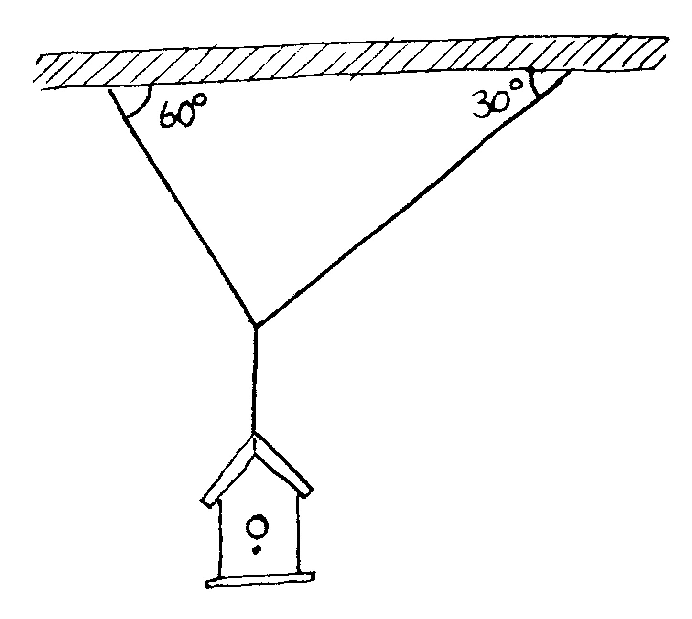
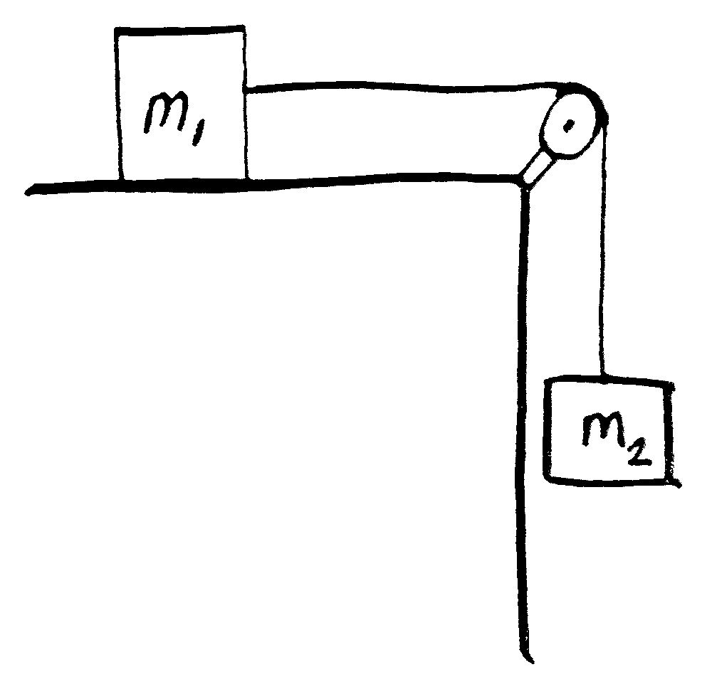

Homework 02
Problem 1
A 150-N bird feeder is supported by three cables as shown in the below figure.
- Find the tension in the left cable.[\(130~N\)]
- Find the tension in the right cable.[\(75~N\)]\newline\
{ width=45% }

Problem 2
An object with mass \(m_1= 5.00~kg\) rests on a frictionless horizontal table and is connected to a cable that passes over a pulley and is then fastened to a hanging object with mass \(m_2 = 10.0 ~ kg\), as shown the below figure.
- Find the acceleration of each object. [\(6.53~m/s^2\)]
- Find the tension in the cable.[\(32.7~N\)]\newline\
{ width=35% }

Problem 3
Objects with masses \(m_1 = 10.0~kg\) and \(m_2 = 5.00~kg\) are connected by a light string that passes over a frictionless pulley as in the figure from problem 4.2 (note the masses switch). If when the system starts from rest, \(m_2\) falls \(1.00~m\) in \(1.20~s\) :
- Find the acceleration of each object.
- Find the tension in the cable.
- Determine the kinetic friction between \(m_1\) and the table.[\(\mu = 0.287\)]
Problem 4
Imagine a landing craft approaching the surface of Callisto, one of Jupiter’s moons. If the engine provides an upward force (thrust) of \(3260~N\), the craft descends at constant speed; if the engine provides a thrust of only \(2200~N\), the craft accelerates downward at \(0.39~ m/s^2\).
- What is the weight of the landing craft in the vicinity of Callisto’s surface?
- What is the mass of the craft?
- What is the free-fall acceleration near the surface of Callisto?
- What is the weight of the landing craft on the earth¹s surface?
Problem 5
A 2.50kg block slides along a frictionless track moving with an initial velocity of 1.75m/s and collides with a spring. The spring compresses and stops the block.
- Calculate the kinetic energy of the block in Joules. [\(3.83~J\)]
- The spring constant is 200N/m. Solve for the displacement of the spring. [\(19.6~cm\)]
Problem 6
Two children play on a frozen pond. One child sits on a sled while the other pushes. The child on the sled is pushed off with an initial velocity of 3.81m/s across the ice. The coefficient of friction between the ice and the sled is 0.100. The child and the sled have a combined mass of 62.3kg.
- Solve for the distance the child on the sled with travel. [\(7.40~m\)]
- Calculate the energy taken by friction. [\(452~J\)]
Problem 7
A block of 3.00kg slides down a 38.0° incline starting from rest 0.500m above the ground. The coefficient of friction between the block and the incline is 0.420.
- Solve for the final velocity of the block at the bottom of the incline using Conservation of Energy. [\(2.13~m/s\)]
Problem 8
A rope swing attached to a large tree branch hangs off the edge of a hill side leading to a lake. A person runs off the hillside with an initial velocity of 3.00m/s. The rope swings through an arc, passes just above the water’s surface and the person lets go on the upswing over the water at an angle of 22.0° and 3.00m above the water.
- If the launching point is 8.00m above the water’s surface find the velocity at the point of release. [\(10.3~m/s\)]
- Solve for the Range from the point of release. Hint: Use kinematics to find range. [\(12.1~m\)]